08/01/2025 • Mehmet Emre Toktay Machine Learning & Data Science Algorithms Handsbook Regression (Linear, Logistic, and Polynomial) Regression is an algorithm that models the relationship between a dependent variable (target) and one or more independent variables (features). Regression is important in the real world because it helps us understand and predict relationships between variables, enabling informed decision-making in various fields by identifying trends, forecasting outcomes, and assessing the impact of different factors. Linear regression is a simple algorithm that models these relationship by fitting a linear equation. The goal is to minimize the error between the predicted and actual values. Image Source: substackcdn.com It's widely used for predicting continuous outcomes, such as housing prices, stock market trends, and sales forecasting. Its simplicity makes it easy to understand and apply in many contexts. Logistic Regression is similar to linear regression, but it's used to model the probability of a binary outcome instead of a linear function. This makes it great for tasks like fraud detection and medical diagnosis because it's simple, fast, and easy to understand. Image Source: substackcdn.com Polynomial Regression models relationship(s) between variables using a polynomial function (i.e. curved line) instead of a straight one and can thus do a better job of modelling more complex data-sets: Image Source: substackcdn.com Polynomial regression is important because it helps model more complex relationships that linear regression cannot capture, making it useful in fields like finance, physics, and medicine. Support Vector Machines (SVMs) Support Vector Machines (SVMs) are a machine learning algorithm used for classification and regression. They work by finding a hyperplane that best separates data into different classes. The goal is to maximize the margin between the classes, with the closest data points (called support vectors) helping to define this boundary. Image Source: surveypractice.org SVMs are powerful because they perform well in both linear and non-linear data (using a technique called the kernel trick). They are good at generalizing and avoiding overfitting, and they work well in high-dimensional spaces. Decision Trees (Random Forest & Boosted Trees) Decision Trees are classification algorithms that define a sequence of branches. At each branch intersection, the feature value is compared to a specific function, and the result determines which branch the algorithm follows. The way that decisions are made in regards to decision tree varies depending on the type of tree. When the depth of a decision tree grows the error on validation data tends to increase a lot. One way to exploit a lot of data is to train multiple decision trees and average them. Random forests are an ensemble method that builds multiple decision trees using random subsets of the data and combines their predictions (through voting for classification or averaging for regression). The reason for the "forest" in the name is due to the fact that this algorithm doesn't just depend on one decision tree - but many. 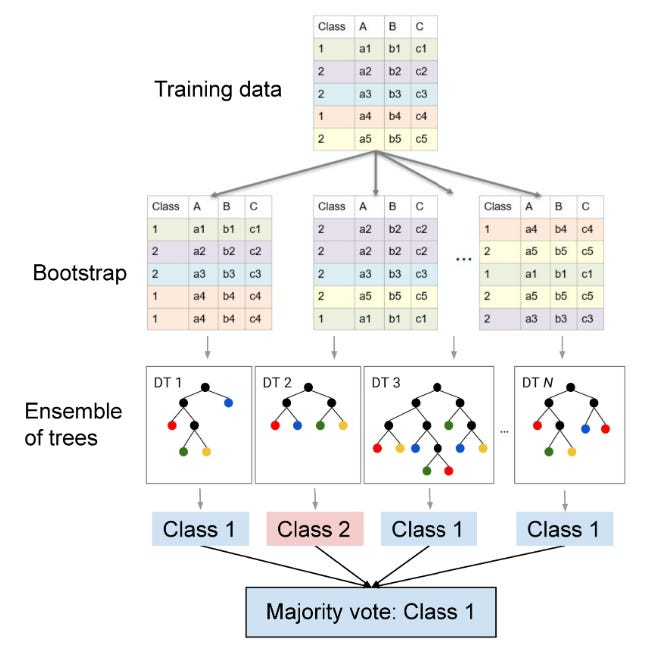> Image Source: researchgate.net Boosted Trees: Rather than randomly sampling from our data set and constructing trees based on this data (normally called bagging), we can also use a methodology called boosting which builds decision trees sequentially, where each new tree focuses on correcting the mistakes of the previous ones. Unlike bagging, which trains trees independently, boosting adjusts the weights of misclassified samples, so future trees give more attention to hard-to-predict cases. This step-by-step refinement process leads to a stronger predictive model, often outperforming bagging methods like random forests in tasks requiring fine-tuned accuracy. However, boosting is also more sensitive to noise and overfitting, requiring careful tuning of parameters like learning rate and tree depth. 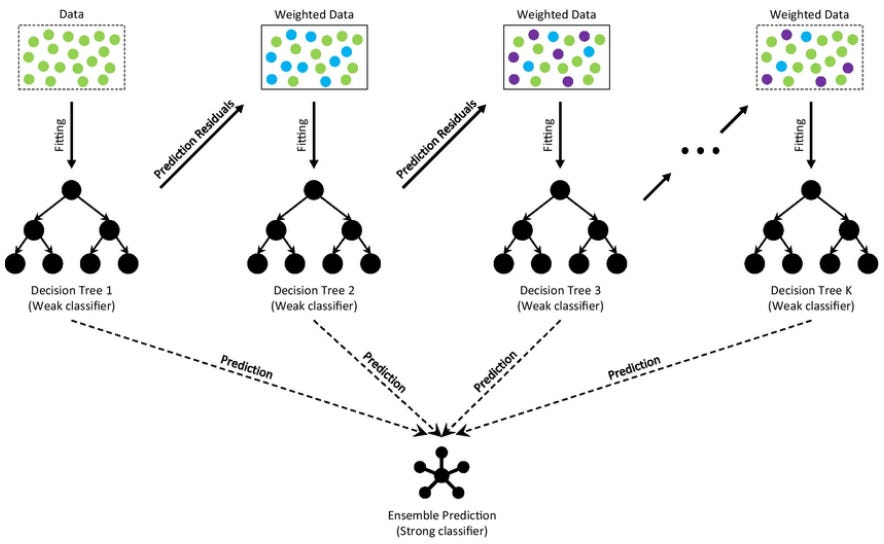 Image Source: researchgate.net Decision trees are important because they provide a simple yet powerful way to make decisions based on data, making them widely used in fields like finance, healthcare, marketing, and fraud detection. Their if-then structure is easy to interpret so they're important in applications where understanding the reasoning behind predictions matters. They also handle both numerical and categorical data, work well with missing values, and can capture nonlinear relationships in data. Gradient Descent & Backpropagation Gradient Descent is an optimization algorithm used to minimize a function by iteratively moving in the direction of its steepest descent, as defined by the negative of the gradient. In simpler terms, it helps find the lowest point of a function, which corresponds to the best solution in many optimization problems. Gradient descent uses the gradient information (direction of steepest descent) to find the local minimum: 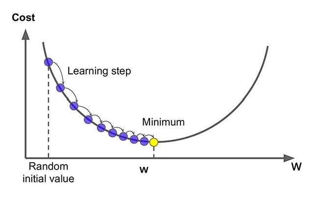 Image Source: blog.gopenai.com The choice for descent direction d is the direction of steepest descent. Following the direction of steepest descent is guaranteed to lead to improvement, provided that the objective function is smooth and the step size is sufficiently small. 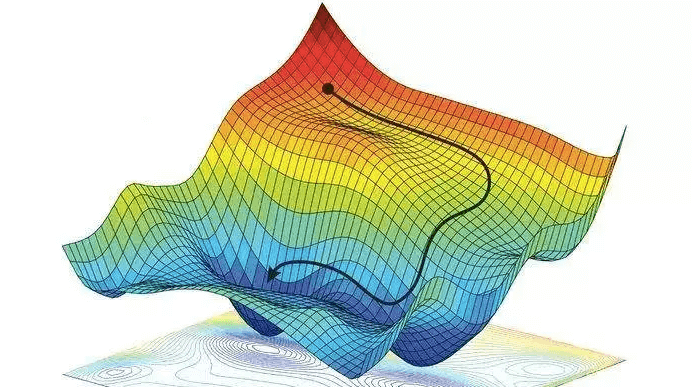 Image Source: easyai.tech Unlike brute-force methods, gradient descent scales well, making it practical for complex problems in AI, physics, finance, and engineering. Backpropagation is the foundation of training artificial neural networks. It is an algorithm that updates the weights of a neural network by minimizing the error (or loss) using gradient descent. The backpropagation algorithm was a major milestone in machine learning. Prior to it being discovered, tuning neural network weights was extremely inefficient and unsatisfactory. One popular method was to adjust the weights in a random, uninformed direction and see if the performance of the neural network increased, which obviously hindered the effectiveness of neural networks. Backpropagation revolutionized this by providing a systematic, efficient way to compute the gradients of the loss function with respect to each weight, enabling the network to learn from its mistakes and improve progressively through gradient descent. This allowed deep learning models to train on large datasets and achieve breakthroughs in fields like computer vision, natural language processing, and speech recognition, ultimately driving the current AI revolution. Neural Networks Neural networks are a class of algorithms designed to mimic the human brain. They consist of layers of interconnected nodes, or "neurons," that process data by learning patterns and relationships. Each neuron receives inputs, applies weights, and passes the result through an activation function to determine its output. By adjusting these weights through training, neural networks improve their ability to recognize patterns, make predictions, and solve complex problems, such as image recognition, language processing, and game playing. Image Source: substackcdn.com There are many different types of neural networks: Feedforward Neural Networks (FNNs): These are the simplest type of neural networks, where data moves in one direction—from input to output—through layers of neurons. They're commonly used for classification tasks and function approximation. Convolutional Neural Networks (CNNs): Excellent for tasks like image classification and object recognition. They work by processing data through layers that automatically learn important features from the input, such as edges or shapes in images. The key layers in a CNN are the convolution layers and the pooling layers. The convolution layer uses small filters (or kernels) that slide over the input data (like a window), applying mathematical operations to detect features such as edges or textures. These filters help the network focus on important patterns, rather than on individual pixels. The pooling layer reduces the size of the data by taking the most important information from a region of the input (such as the maximum value or average value) to make the model more efficient and less prone to overfitting. 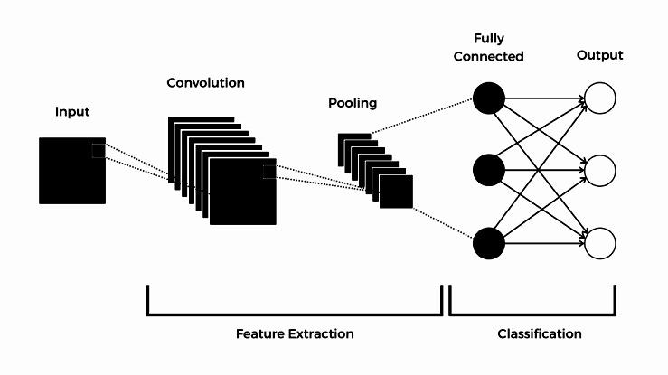 Original Image Source: talent500.com Recurrent Neural Networks (RNNs): RNNs are designed for sequential data, such as time-series analysis, natural language processing, and speech recognition. Unlike FNNs, RNNs have loops in their architecture, enabling them to retain information from previous inputs (memory), making them well-suited for tasks where context matters. 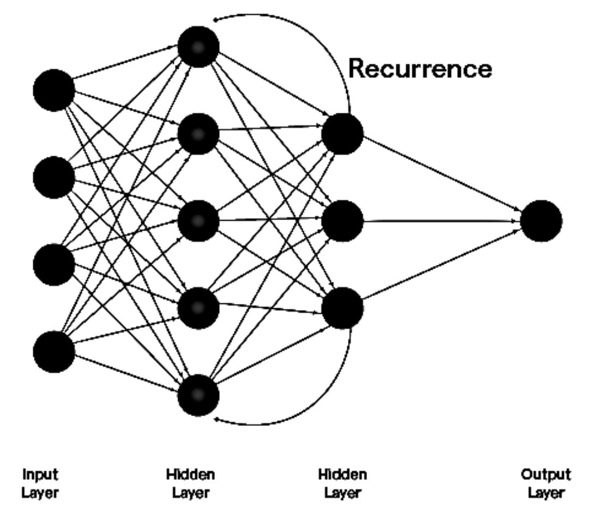 Original Image Source: botpenguin.com Long Short-Term Memory (LSTM): A specialized type of RNN, LSTMs are capable of remembering long-term dependencies. They are commonly used in language translation, speech recognition, and other applications that require understanding context over long sequences of data. Generative Adversarial Networks (GANs): GANs consist of two networks—a generator and a discriminator—working in opposition. The generator creates fake data, and the discriminator tries to distinguish it from real data. This setup is popular in image generation, video creation, and even deepfake technology. Original Image Source: researchgate.net Autoencoders: These networks are trained to compress (encode) input data and then reconstruct it (decode) to match the original input. They're frequently used in unsupervised learning for tasks like anomaly detection, data denoising, and dimensionality reduction. Transformer Networks: If you've used ChatGPT or DeepSeek, you're familiar with transformers. They've revolutionized natural language processing (NLP) and tasks like machine translation, text summarization, and sentiment analysis and use attention mechanisms to focus on important parts of input data, allowing them to handle long-range dependencies more effectively than RNNs. 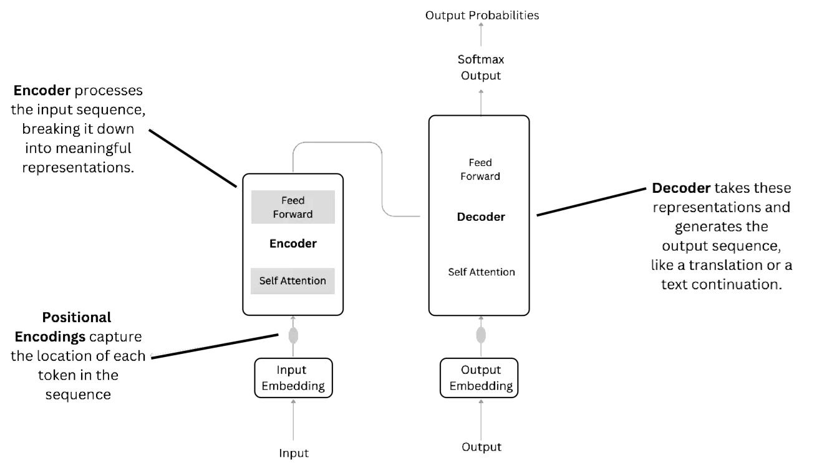 Original Image Source: medium.com Of course, the above is a very, very high-level overview of the different types of neural networks. If you want more in depth details on how transformers work, I have a write up available here: Intuitive and Visual Guide to Transformers and ChatGPT. If you want a more in-depth explanations on how general feed-forward networks work, it's available here: A Visual Introduction to Neural Networks. Reinforcement Learning (RL) Reinforcement learning is the backbone of autonomous systems, robotics, and recommendation systems. It powers self-learning systems like AlphaGo, video game AI, and personalized content recommendation and plays a huge role in large-language models (LLMs) like ChatGPT and DeepSeek. It involves an agent that interacts with an environment and learns through trial and error (much like how humans learn). The agent takes actions, receives feedback in the form of rewards or penalties, and adjusts its strategy over time to maximize the total reward. At the core of RL is the reward signal, which tells the agent how good or bad an action was. The agent maintains a policy, which is its strategy for choosing actions based on its current state. The learning process involves estimating the value of states and actions, often using value functions (which predict future rewards) or policy-based methods (which directly optimize action selection). Some key RL algorithms include: Q-Learning – A fundamental algorithm that learns an optimal action-value function, called the Q-function. The agent updates its Q-values using the Bellman equation and explores different actions through an exploration-exploitation tradeoff (e.g., using ε-greedy strategies). You can think of it as using a tabular approach (i.e. lookup tables) to select next actions based on discrete actions and values within its environment. 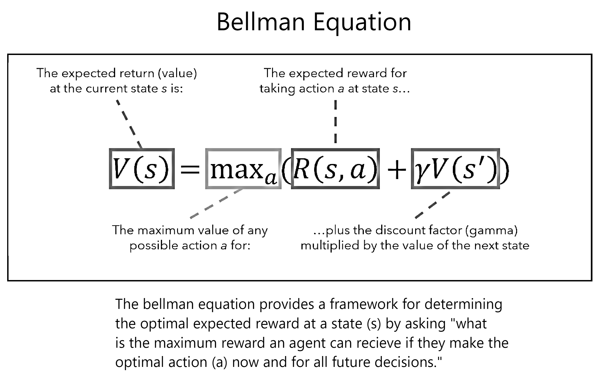 Original Image Source: neptune.ai Deep Q-Networks (DQN) – An extension of Q-learning that uses deep neural networks to approximate Q-values, allowing RL to handle complex, high-dimensional environments like video games. The main issue with regular Q-Learning is that it deals with training agents in environments with finite numbers of discrete states and actions. Most real world environments are not like this though, and DQN solves it by using neural networks as function approximators. Instead of a value table, we now apply a neural network that accepts state and outputs an estimated value function for each possible action. 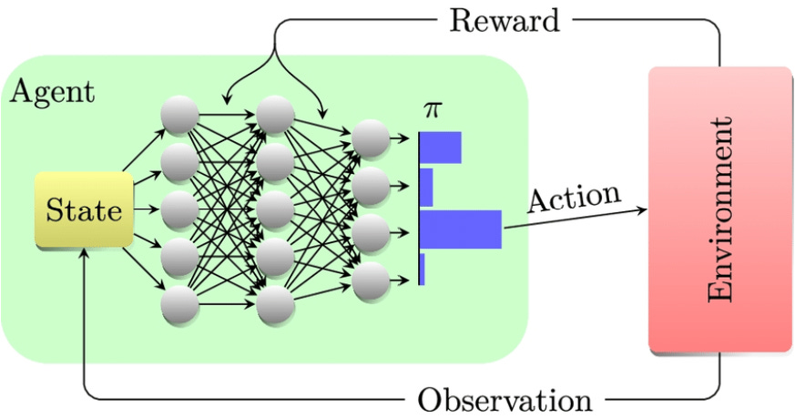 Image Source: researchgate.net Policy Gradient Methods – Instead of learning a value function, these methods directly optimize the policy. A well-known algorithm in this category is REINFORCE, which updates the policy based on the rewards received. 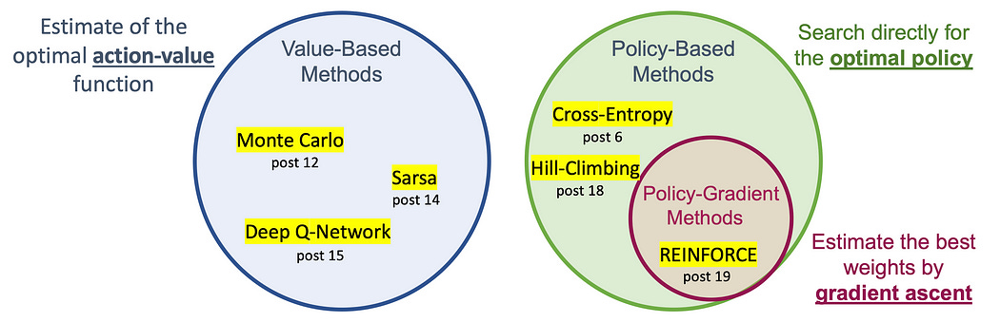 Image Source: sefidian.com Actor-Critic Methods – A hybrid approach that combines policy-based and value-based methods. The actor selects actions while the critic evaluates them and provides feedback to improve learning. 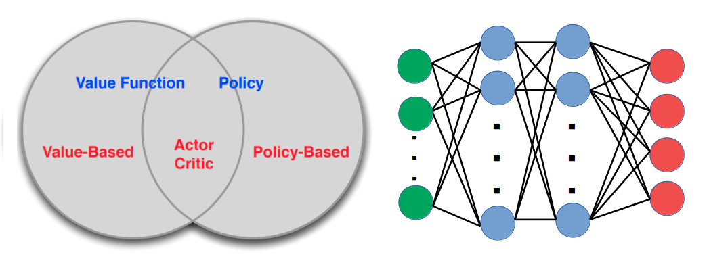 Original Source: roboticseabass.com Proximal Policy Optimization (PPO) – A widely used policy gradient method that stabilizes learning by preventing overly large updates, making it effective in real-world applications like robotics and self-driving cars. Natural policy gradients in the real world may involve second-order derivative matrices which makes them not very scalable for large scale problems — the computational complexity for computing the 2nd derivatives is far too high. PPO uses a slightly different approach: instead of imposing hard constraints, it formalizes the constraint as a penalty in the objective function. By not avoiding the constraint, it can use first-order optimizers and (like Gradient Descent) to optimize the objective. Although these algorithms may make some bad decisions once a while, they strike a good balance between speed and accuracy.